A WEEK ON THE COAST
May 19 – 26, 2026
Seven days. Two cities. One road between them.
The Shape of the Week
A week in Los Angeles doesn't have to mean seven days in Los Angeles. The flight from Tel Aviv lands us in a city that's as much a collection of neighborhoods as it is a single place — and the coast just north of it, up the Pacific Coast Highway, opens into something quieter: Santa Barbara, a town with Spanish-tile roofs and a working waterfront, and behind it the Santa Ynez valley, thirty minutes inland, where the vineyards start.
So the plan is this. Four days in Los Angeles — the Getty, the Academy Museum, Griffith at sunset, and a morning in Beverly Hills before the Sunset Strip. Then on Saturday we pick up a car and drive north on the Pacific Coast Highway: lunch at Malibu Pier, a stop at El Matador Beach for the sea stacks, and two nights at Hotel Californian on State Street. One of those days is for Santa Barbara itself — the Mission, the waterfront, and not much else.
“The drive up the coast
is itself the good part.”
Sunday afternoon we drive back. Two more days in LA — downtown this time, The Broad and Grand Central Market — and then Venice on the way to the airport. No wasted days. No zig-zagging. The Santa Barbara leg is the good surprise in the middle.
The Route
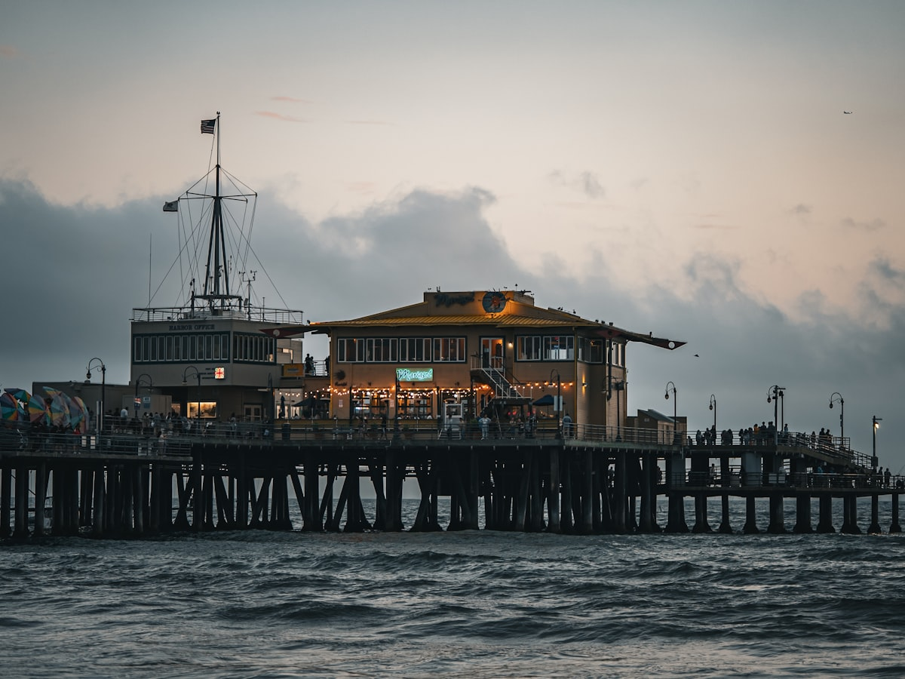
Santa Monica Pier, dusk
DAY 1 — TUE MAY 19
We land mid-afternoon, already tired, and we don't pretend otherwise. Check in, drop the bags, walk the Santa Monica boardwalk until the sun is gone. Dinner somewhere we can walk to. The rest of the week can wait.
Must Do
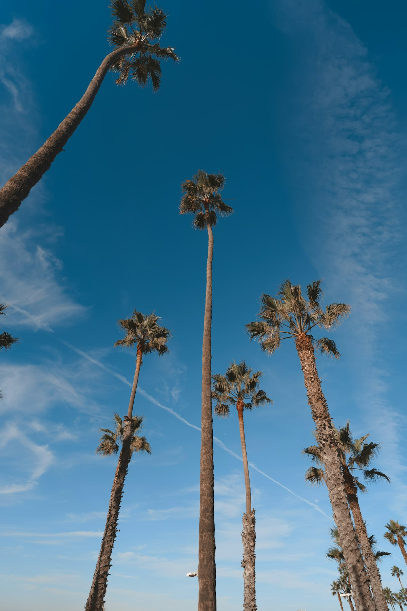
Venice Beach — morning
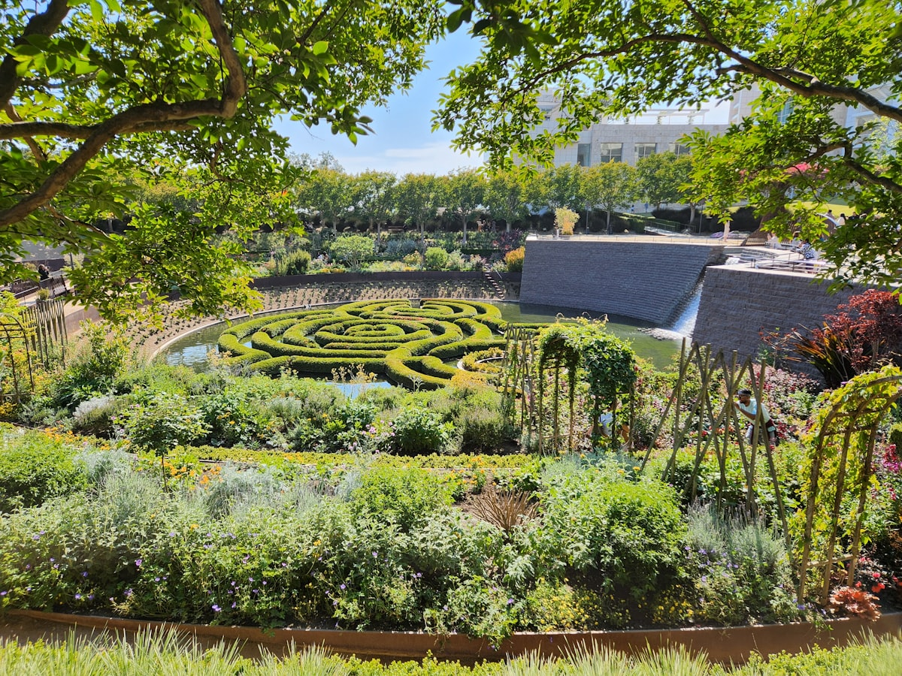
Robert Irwin's Central Garden, The Getty
DAY 2 — WED MAY 20
Start early in Venice — Gjusta for breakfast, then a slow walk down Abbot Kinney. You're based in Santa Monica so this is practically next door. Uber across to the Getty Center by midday: Richard Meier's travertine campus on a hill above the 405, tram access, the best garden in the city. Half a day here is the right amount. Dinner back in Brentwood or Santa Monica.
Must Do
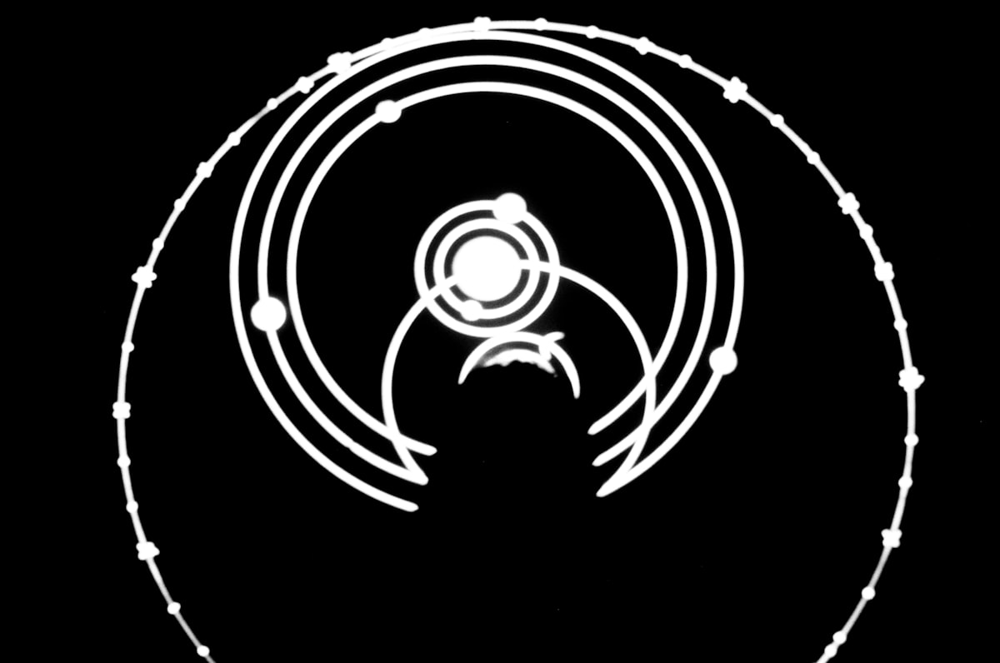
Academy Museum of Motion Pictures, Wilshire Blvd
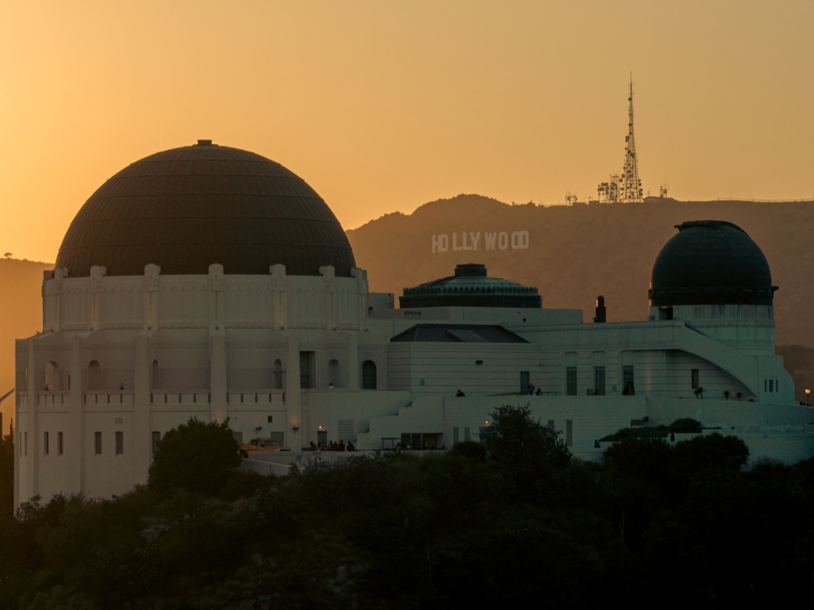
Griffith Observatory, Los Angeles
DAY 3 — THU MAY 21
Optional first stop: a quick pass through Hollywood Blvd — 30 minutes, see the TCL Chinese Theatre and a stretch of the Walk of Fame, then leave. It's touristy and can feel rough on the side streets; treat it as a checkbox, not a destination. Then the real day: the Academy Museum is the best museum in LA right now, and Griffith Observatory timed for 6:30 PM catches both the last of the light and the full city-lights transition.
Must Do
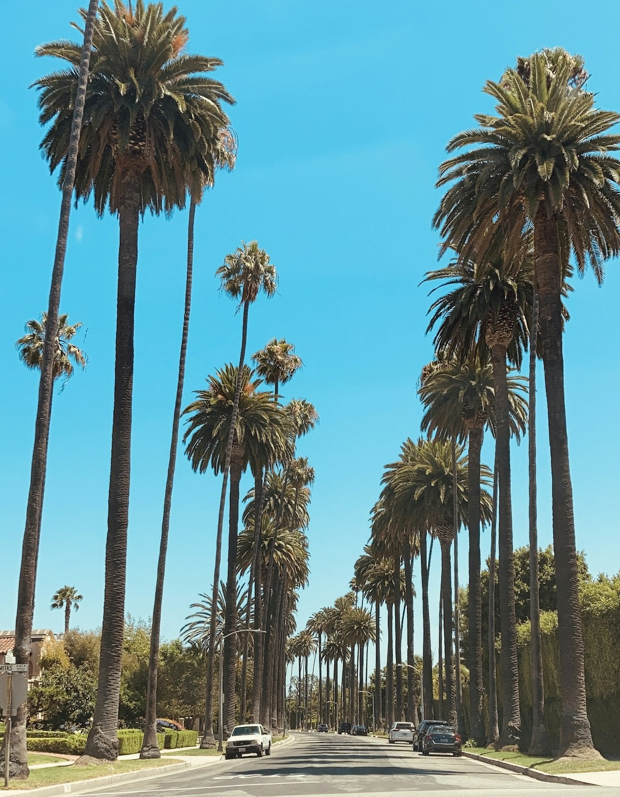
Beverly Hills, Los Angeles
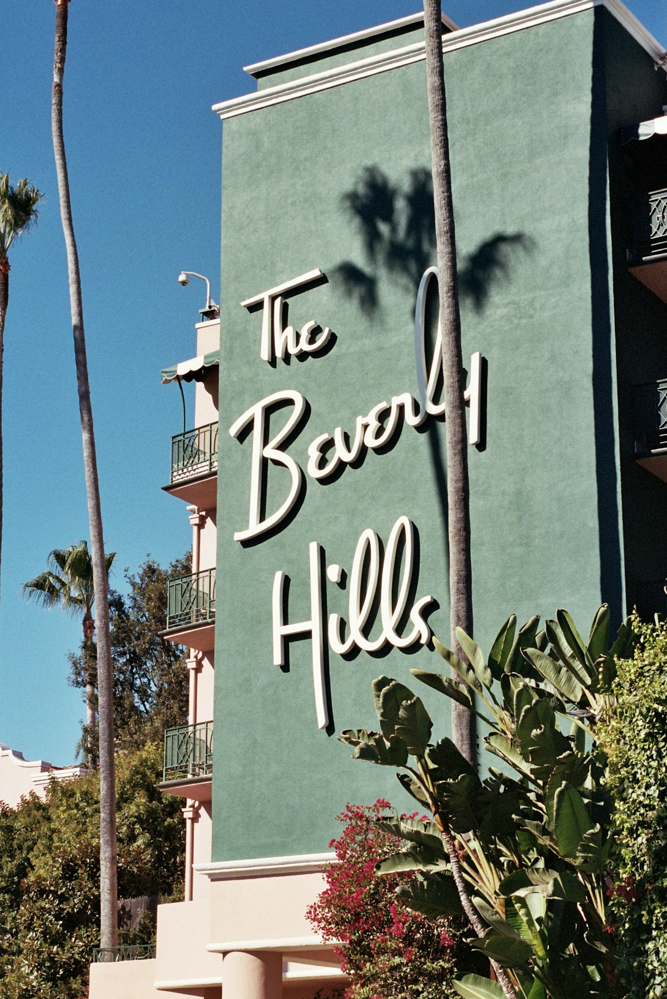
The Beverly Hills Hotel, Sunset Blvd
DAY 4 — FRI MAY 22
Beverly Hills in the morning is one thing — Rodeo Drive is worth a walk, but the real neighbourhood is the residential streets behind it, lined with jacarandas and cars that cost more than apartments. Lunch on Beverly Drive. Then west into West Hollywood, where Sunset Boulevard becomes the Strip: the Chateau Marmont, the billboard canyon, rooftop bars with views across the city. Car-free day throughout — Uber everywhere.
Must Do
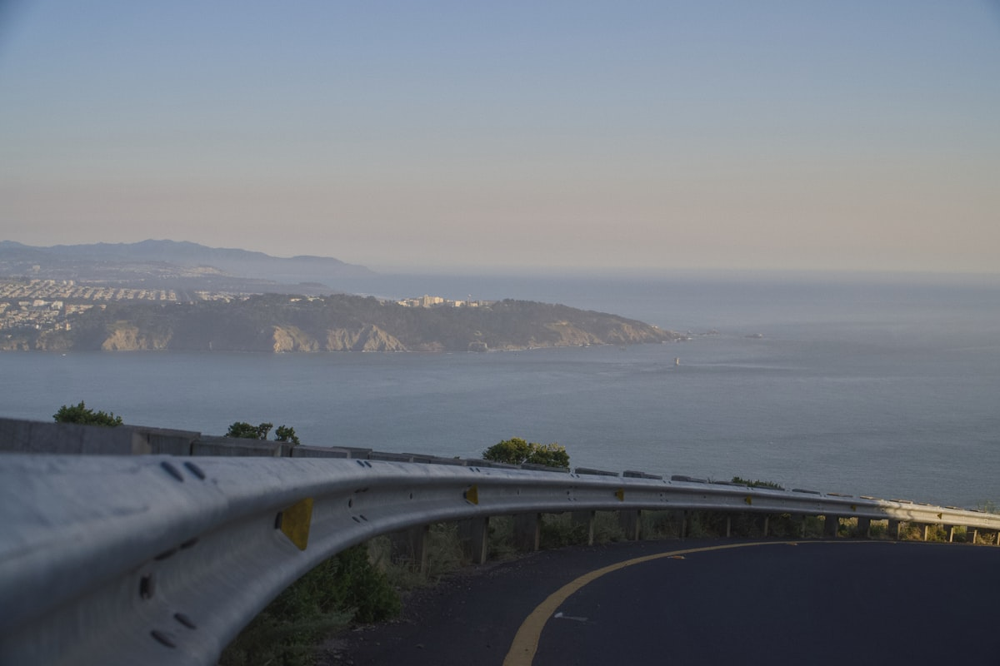
Pacific Coast Highway, California
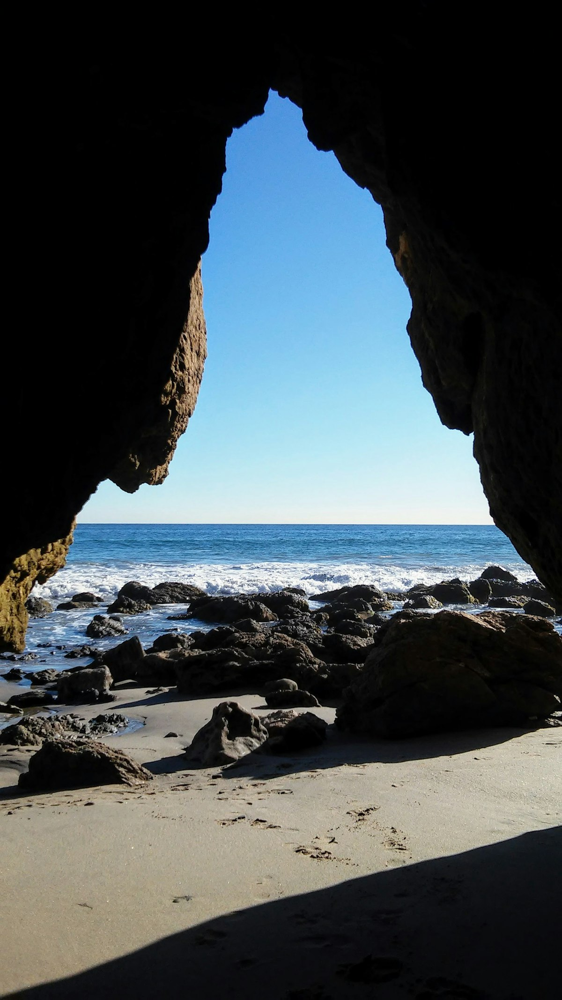
El Matador State Beach, Malibu
DAY 5 — SAT MAY 23
Pick up the rental car this morning — the first time we actually need one. Mid-morning, head north on PCH. The Pacific Coast Highway from Santa Monica to Santa Barbara is two and a half hours of cliffs and water, and there are two stops worth making. Lunch on the pier at Malibu Farm. An hour at El Matador Beach, where the sand gives way to sea stacks and caves. Check in at Hotel Californian by evening — one block from the beach, on the edge of the Funk Zone — and walk up State Street for dinner.
Must Do
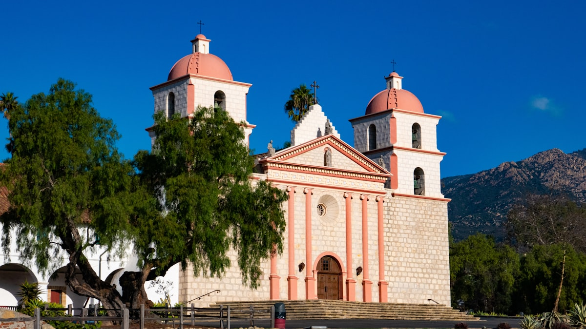
Old Mission Santa Barbara — the Queen of the Missions
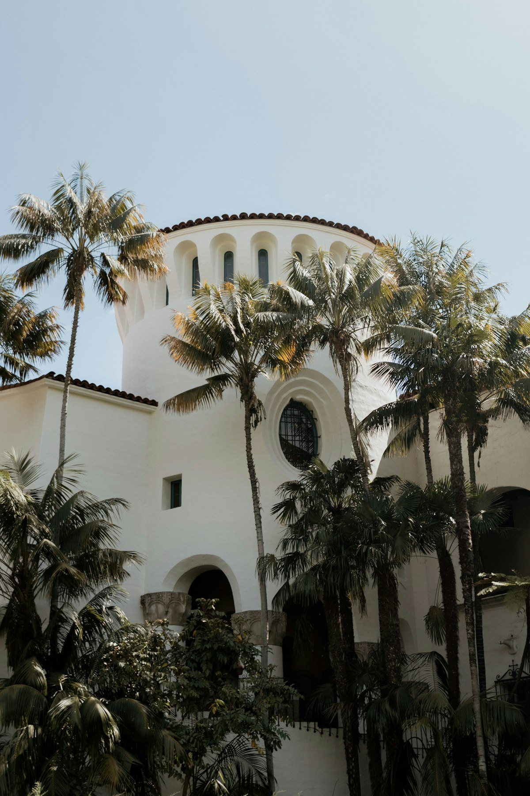
Spanish Colonial architecture, Santa Barbara
DAY 6 — SUN MAY 24
One easy morning in Santa Barbara before the drive back. The Old Mission is the city's founding building — Spanish colonial, ochre stucco, a long garden, and a view down to the ocean from the forecourt. Brunch at Helena Avenue Bakery. On the road by two, back in LA by four, dinner at Bestia or Bavel in the Arts District — whichever has the earlier reservation.
Must Do
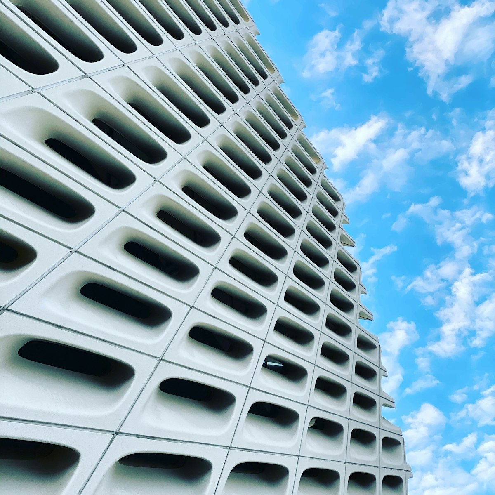
Grand Avenue, Downtown Los Angeles
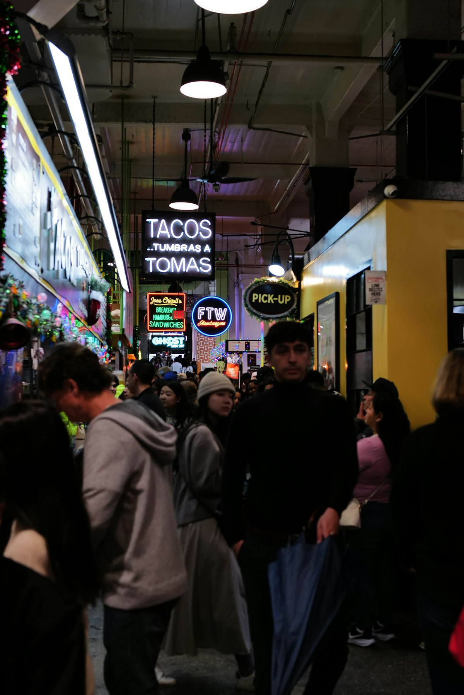
Grand Central Market, Downtown LA
DAY 7 — MON MAY 25
The Broad is an oddity — a contemporary art museum inside a perforated honeycomb shell across from Disney Hall. Free timed ticket, one hour inside. Grand Central Market is a two-minute walk: a hundred years old and still the best lunch in downtown. Then Uber to the Arts District — do not walk between these two areas. The streets in between run through a rough part of downtown; the Uber is three minutes and a few dollars.
Must Do
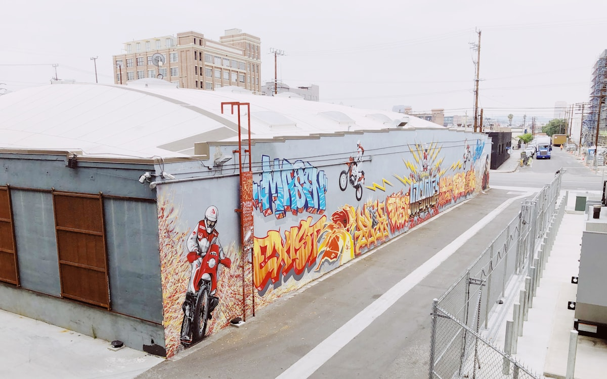
Arts District, Los Angeles — morning
DAY 8 — TUE MAY 26
A slow breakfast in the Arts District — Bread Lounge for pastries, or Urth Caffé if you want eggs. A short walk to see the murals on the blocks around Traction Ave and E 3rd Street. Then straight to LAX. The 110 South from downtown is the cleaner route and avoids the worst of the 405. Flight home at 1:30 PM.
Must Do
Two Nights · May 23 & 24
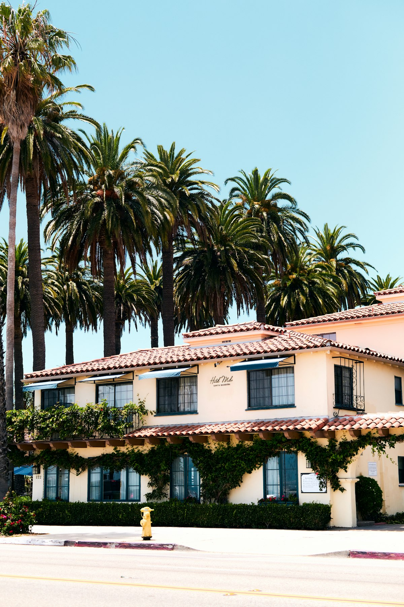
Hotel Californian — Spanish-Moorish architecture, foot of State Street
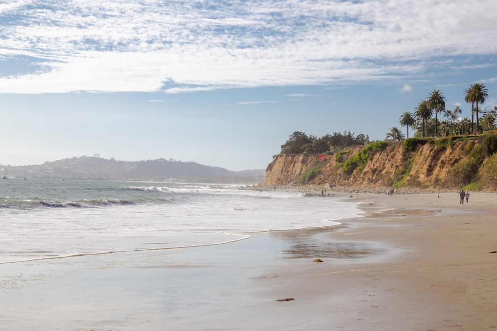
Harbor view from the rooftop
Spanish Colonial detail, State Street
Old Mission, five minutes north
Funk Zone tasting rooms, walkable
Hotel Californian sits at the foot of State Street, on the edge of the Funk Zone and one block from the beach. The architecture is Spanish-Moorish — arched doorways, tiled floors, wrought-iron balconies — and the rooftop pool looks over the harbor. Walkable to two dozen restaurants, tasting rooms, and coffee shops. Rated 4.3 stars across 550+ reviews. The hotel runs a shuttle further up State Street when we want to venture out.
Before We Go
Check off as you book. State saves between visits.
Good to Know